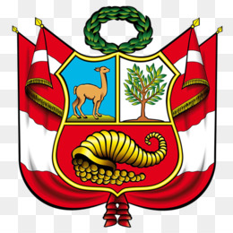

Sobre Nosotros

Nuestra Misión
Este sitio web ha sido creado con fines educativos para difundir el conocimiento sobre las tres regiones naturales del Perú: Costa, Sierra y Selva. Buscamos resaltar la belleza, diversidad y riqueza cultural de nuestro país.
El Equipo
Somos un grupo de estudiantes apasionados por la geografía y el turismo nacional. Nuestro objetivo es proporcionar información clara y accesible para todos aquellos interesados en conocer más sobre el Perú.
¿Por qué visitar el Perú?
Perú es un destino único que ofrece desde playas soleadas hasta montañas nevadas y selvas vírgenes. Cada región tiene su propia identidad, gastronomía y tradiciones que merecen ser exploradas.